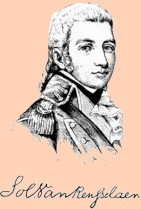
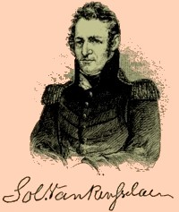

Solomon Van Rensselaer
Solomon Van Rensselaer was born in August 1774 and christened "Salomo Van Vechten" in the Albany Dutch church on August 28. He was the third son of Hendrick and Alida Bradt Van Rensselaer. He grew up in the Grennbush home of a reknowned future Revolutionary war officer.
In January 1797, he married his cousin, Harriet Van Rensselaer - the daughter of the owner of Cherry Hill. Their daughter was christened at the Albany Dutch church in December 1799. The marriage produced five daughters and one son who survived to maturity.
After a preparatory education, Solomon followed his father to a career as an officer in the United States Army. He achieved the rank of major in 1799 and left military service in June 1800. During the 1790s, he had seen action against the Indians and was wounded. He became adjutant general of the New York State militia in 1801.
He served as lieutenant colonel of the New York Volunteers during the War of 1812. He accompanied his in-experienced cousin, General Stephen Van Rensselaer and played a central part in the ill-fated Battle of Queenston Heights in October 1812. During that action, he was wounded several times.
Solomon was a conspicuous Federalist and a target of political partisanship in the New York State capital city. Feeling embattled, in April 1807, he sought out and attacked Elisha Jenkins (one of his more vocal critics) on State Street in Albany. A melee ensued leaving Van Rensselaer bloodied and intent on seeking satisfaction through legal action.
Solomon Van Rensselaer's Albany residence was at 63 North Pearl Street. After 1827, he is said to have purchased the Cherry Hill property. He maintained it as a country retreat for the remainder of his life.
He was elected and served in the United States Congress from 1819 to 1822. At that time, resigned to become postmaster of Albany. He served as postmaster from 1822 to 1839 and again from 1841 to 1843.
Solomon Van Rensselaer lost his wife in 1840. He died in April 1852 at the age of seventy-eight. His will passed probate that May. His remains reside at the Albany Rural Cemetery.
This engraved portrait of young Solomon Van Rensselaer in military uniform was copied from an internet exposition on the Van Renssleaer family. It resembles the miniature of him reputedly painted by Gilbert Stuart and in the collection of the Albany Institute of History and Art. Another miniature portrait is referenced in Cherry Hill, p. 50. What appear to be matching portraits of Solomon and Harriet hang at the historic site museum and are shown on page 56.